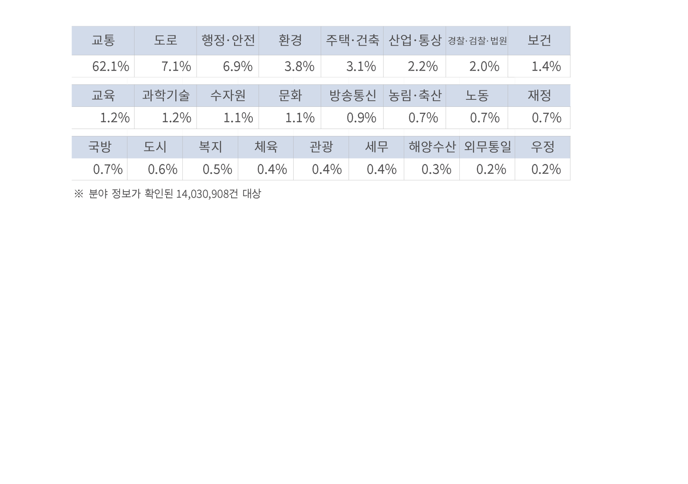

<div class="wireframe-6">
  <div class="rectangle-14"></div>
  <div class="rectangle-12"></div>
  <div class="div">● 분야별 현황</div>
  <div class="_62-1-7-1-6-9-3-8-3-1-2-2">
    분야별로는 교통 분야(62.1%)가 가장 많고, 도로(7.1%), 행정 안전(6.9%),
    환경(3.8%), 주택 건축(3.1%), 산업 통상(2.2%) 분야 등의 순
  </div>
  
</div>
